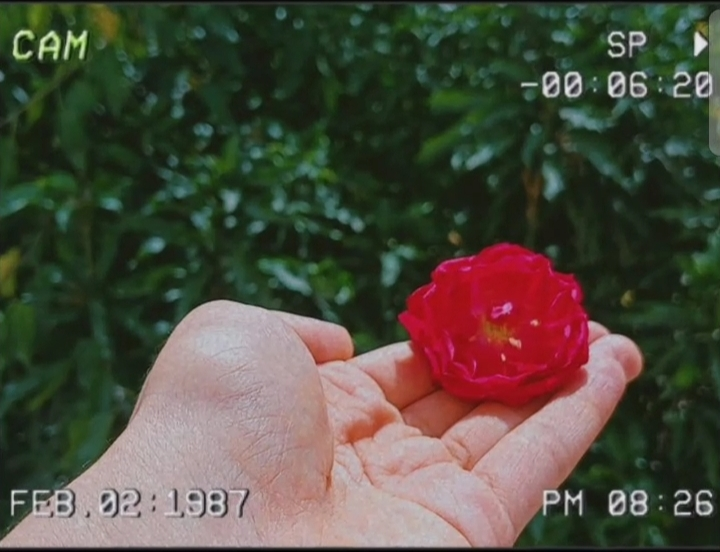
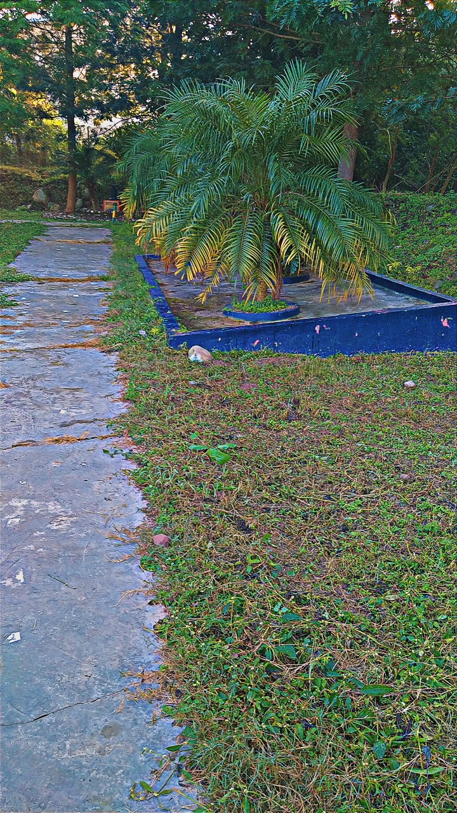
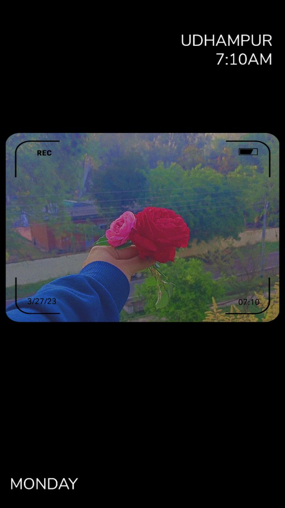

WHISPERS
OF
THE
HEART
💖
#RoSe
1st January, 2025
Sitting here, with nothing but quiet and pain,
All I do is wish things could be the same.
Not a day goes by that I don’t see her face,
Just her memory, filling up every space.
Each rose that blooms, I think of her name,
Even in silence, I can’t forget this flame.
But she doesn’t love me, I know that’s true.
Looking at her photo, I still feel the spark,
Old memories haunt me, deep in the dark.
Visiting places where we used to roam,
Every step I take, I feel so alone.
She doesn’t care anymore; I’m left behind.
Remembering her laugh, her eyes, her smile,
I loved her deeply, though it was never worthwhile.
My heart still holds on, but I can’t pretend,
I long for a time when this pain will end.
So much love that’s never been returned,
Only memories left that leave me burned.
My tears have soaked this year in despair,
Under this sky, I’m lost in thin air.
Carrying her absence, it’s all I can do,
Hoping she finds a love that’s true.
2nd January, 2025
Roses may bloom, but none can match your grace, In your eyes, the world finds its place. Moonlit nights carry your name in the air, In the quiet of my soul, you are always there. Stars may fade in your gentle light, Holding onto dreams of you through the night. Under the sky, my heart silently calls, Keeping your image, where love never falls. Love so deep, even in the darkest despair, As I breathe, your presence fills the air.
3rd January, 2025
The roads, the grounds, the parks—every corner reminds me of her, even though she never felt the same way. I still walk the paths we once took, feeling the weight of those memories with every step. The breeze feels familiar, carrying a scent that pulls me back to moments where her presence made the world feel brighter. Sneaking around and meeting her, hiding from everyone, had its own kind of thrill, turning simple moments into something special. Now, even though she’s not here, it feels like she’s everywhere—her memory tied to the trees, the rustling leaves, and the soft touch of the wind against my face. It’s strange how everything around me seems to hold a piece of her, making this place both comforting and heartbreaking at the same time.
7th January, 2025

I stepped into my room after so long, Remembering a bond that once felt so strong. Every glance at the gift she gave me that day, A piece of her love that still won’t fade away. Life feels so strange now she’s not with me, Like those moments she says weren’t meant to be. Yet the gift broke by mistake, but still, on the wall, Making the idol remain safe, standing proud and tall. I often stand there, wishing she could know, Still hoping deep down she’d never let go. So many memories rush back through my mind, Under this gift, I leave the past behind. Holding on to a love I can’t unwind.
8th January, 2025
I still remember the first roses I gave her. She held them like they were the most delicate thing in the world, but in truth, she was the one who looked more beautiful than anything I could ever give. Her smile that day—it wasn’t just a smile; it was magic. It made everything around me feel brighter, like the whole world had come alive just for her. But then she walked away from my life, and now I can’t see that smile anymore. I miss it, I miss her. I keep hoping for one small moment, even just a word from her, but maybe she’ll never understand what she meant to me. If only we’d met in another time, in another version of life, maybe things would’ve been different. But now it’s just a lingering dream I can’t let go of. I know that it’s not about when someone comes into your life, but who stays until the end. And even if she’s gone, I know I’ll always be here for her, no matter what.
13th January, 2025
I saw my whole world in her eyes, Like the stars that light up the skies. Her eyes were brighter than the moon, A warmth that made my heart swoon. I used to stare for hours, lost, Her gaze, a feeling I can’t exhaust. In every blink, a dream took flight, I thought I'd live forever in her light. No moonlight could match her shine, Her eyes, more beautiful, more divine. At night, under the blanket's fold, I'd look at her pictures, feeling bold. But as I stared, tears would fall, Her eyes made me feel so small. I miss them now more than before, Her bright eyes, the one I adored. I never wanted to let them go, Her gaze was all I needed to know. Now they're just memories in my heart, A love that I can't quite restart.
15th January, 2025
People say time will heal, but it doesn’t. Loneliness grows stronger, and I feel broken. Every thought of you pulls me back in time. All I wanted was to be yours, to be mine Soft whispers of your name are all I hear. Every smile of yours is what I still hold dear. Clouds fill the sky, like my heart filled with sorrow. Only your touch can make the pain feel less hollow. Memories of us replay in my heart, so real. Every moment with you, I wish I could steal. But now I’m lost, and you’re so far away. All I want is for you to come back and stay. Can’t seem to let go of the love I’ve given. Knowing you’re out there, but I feel forgotten. But I’ll wait for you, even if it takes years. All my dreams still carry the hope and the fears. Clouds of doubt fill my mind, but I’m not letting go. Holding on, because I love you more than you know. All I ask is for you to come back, don’t say no.